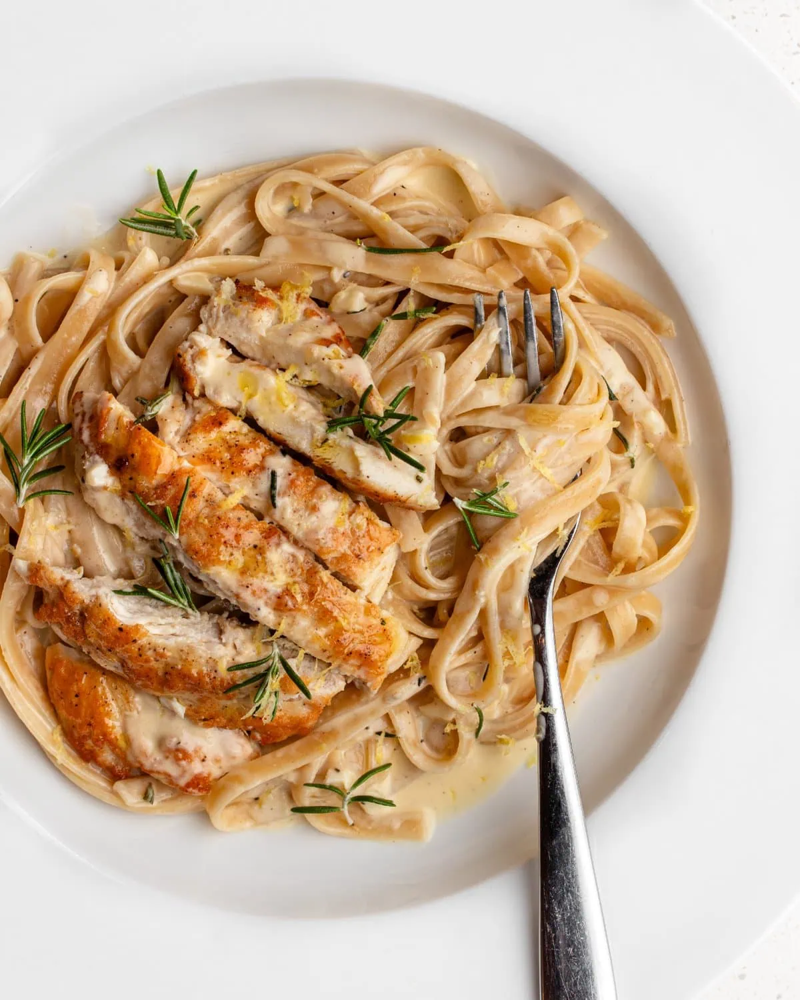

Chicken pasta

What is Creamy Chicken Pasta
Chicken pasta is a simple pasta dish using chicken and cream
Ingredients
- 500 grams of pasta
- 1000 grams of chicken breast
- 500 mililiters of cream
- 1 Chicken stock cube
- boil 2 liters of water. Add some salt
- Whlist water is boilng fry 1000 grams of chicken until sealed, mixing in chicken stock cube
- Once water is boiling cook 500 grams of pasta until well done
- Add cream to chicken, turning down to low heat
- Once pasta is cooked add to chicken and cream sauce, ready to serve